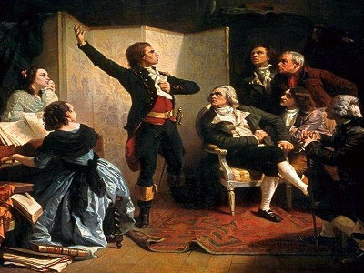

Votez pour l'hymne de la Licence
Le jeu concours de ce mois de février propose de choisir l'hymne de la Licence Informatique. A l'initiative de cette élection, son directeur nous explique :
Je pense que c'est important d'avoir un hymne derrière lequel tout le monde peut se retrouver. Regardez les Anglais avec "God Save the Queen". Ils peuvent être en désaccord sur tout, mais dès que les premières notes retentissent, ils ne font qu'un. Pour la Licence Info, c'est la même idée. Cela participera à la cohésion du groupe.
La sélection de cette année, comme il nous le précise, n'a rien du hasard.
On a effectué une pré-sélection importante, et finalement, on arrive avec 3 morceaux représentatifs, qui proposent des lectures à plusieurs niveaux. Tout d'abord, il était important que ce soit un hymne en anglais, les étudiants étant attendus d'avoir le niveau C1 en fin de cursus. Pour varier, on a donc choisi des Australiens, des Anglais et des Américains. On a ensuite sélectionné des groupes, et non des artistes solo, puisque la filière info se veut renforcer l'esprit de groupe et non juxtaposer des individus. Concernant le type de musique, le choix s'est porté sur des morceaux plutôt rock, voire métal. L'informaticien de base étant un g33k solitaire, c'est le type de musique, relativement recherché du point de vue des harmonies, avec des paroles profondes, qu'il affectionne tout particulièrement.
Pour finir, nous laissons aux étudiants le choix entre des chansons qui peuvent sembler négatives au premier abord, mais se révèlent finalement, à l'écoute des paroles, être d'un optimisme débordant.
Si cette initiative peut sembler quelque peu farfelue, il faut savoir que les équipes pédagogiques prennent très au sérieux l'investissement et l'adhésion des étudiants à cette nouveauté :
Vous remarquerez que chacune de ces chansons, comme tout hymne qui se respecte, est reconnaissable dès les premières notes. On effectuera des tests en balançant à l'improviste cet hymne dans les amphis pour voir si les étudiants se lèvent, la main sur le coeur et se mettent à chanter d'une seule voix. On mesurera le temps de réaction et on punira sévèrement tous ceux qui feront de la résistance.
Pour voter, cliquez sur les liens ci-dessous pour envoyer un mail prérempli avec votre choix (un seul mail par personne sera pris en compte) :
- Voter pour AC/DC - Highway To Hell
- Voter pour Iron Maiden - Wasted Years
- Voter pour Metallica - Nothing Else Matters
Pour rappel, notre dernier jeu concours consistait à trouver une chanson associée à Julien Bernard. Notre sondage a enregistré un taux de participation record (plus de 400 réponses). Plus des ¾ des participants ont voté pour le titre de Blue Oyster Cult "Don't fear the reaper".